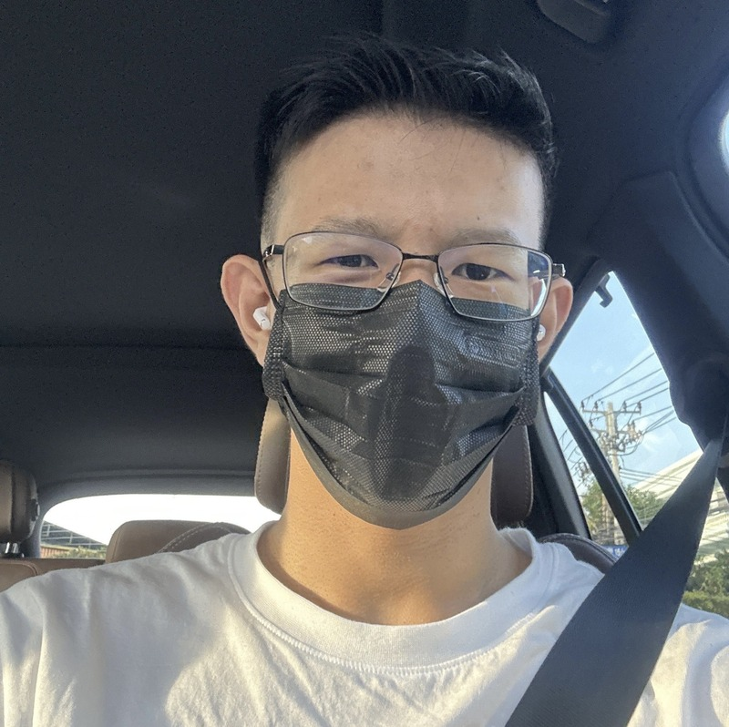

Hello, I have grown up in thailand my entire life. I have been at ICS for 9 years now. This year being my ninth and soon becoming a decade. I love to draw, edit media, play sports, etc. As long as it's fun I'll enjoy it. I am half laos & Chinese. I have a french passport (for some reason). I have long called Thailand my home. Now I am going through the cycle of life called school at International School of Bangkok (ICS).
